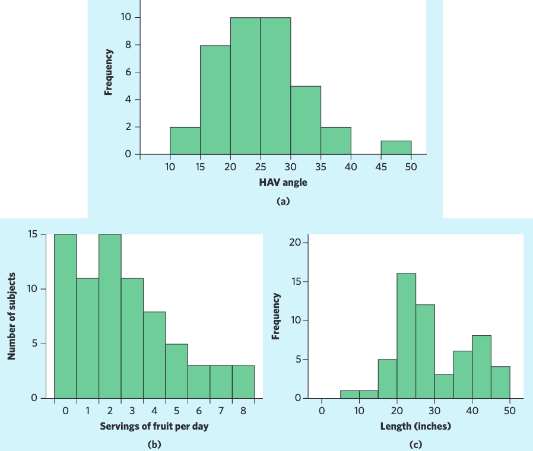
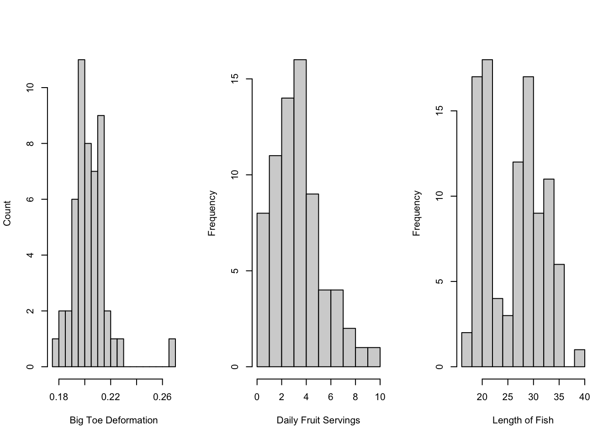

library(ggplot2) # if this fails, run install.packages("ggplot2")
shiny::runGitHub(repo = "DBecker7/DB7_TeachingApps",
subdir = "Apps/samplingDist")8 Sampling Distributions
Please pay attention to the notes.1 They often contain important information.2
8.1 Prelude: Populations and Samples
The main idea in the rest of the course is this: We can use a sample to say something about the population. Before we dive into that idea, let’s make a distinction.
- Statistic: A number that we calculate from data.
- Population parameter: The value of a statistic if it were calculated for the whole population.
- Sample Statistic: The value of a statistic if it were calculated for a single sample.
For example, we find the mean by taking all of the values and adding them up, then dividing by the number of things we added. For heights of Canadians, the population parameter is the value we would get if we found every Canadians’ height and added them up, then divided by the population of Canada. We obviously can’t do this, but it’s useful to think about. The sample mean is the mean we get when we just have a sample. Since we can only get a sample, it would be super cool if we could use that sample mean to talk about what values of the population mean were reasonable guesses.
In the height example, the population was all Canadians. This isn’t always how we define the population! For example, if we wanted to know the average length of pregnancy, we’d be looking at a population of all people who get pregnant at some point in their lives.
8.2 Introduction
You take a sample. You find the sample mean. Is this mean exactly equal to the population mean?3 Probably not.
Wait, did I just say probably not? How probably? We’ve done a few lectures on probability, so we can probably same describe the distribution somehow. What is the probability that the sample mean is within one standard deviation of the population mean? Two standard deviations?
Because of random sampling error,4 every sample is going to have a different mean. We expect most of the sample means to be close to the population mean, with fewer samples resulting in sample means that are further away. In other words, the sample mean should be close to the population mean, but due to sampling error there will be a little bit of a difference.
The variation within our sample should be similar to the variation within the population5, and the variance in the poulation tells us the variance in the sample means. Variation is not something to be afraid of, and sampling errors are not sampling mistakes; we can harness the variability within a sample to draw conclusions about the population!
8.3 Sampling distribution of the sample mean
Because the value of a sample mean is random (since we took a random sample), there’s a probability distribution that describes it. I could just jump to the answer, but it’s best if I build up to it.
The app below6 will take a random sample from the population (in this case, normal), then find the mean and add it to a histogram. As you collect more means, the histogram gets more and more data. This simulates taking many many different samples.
Play around yourself! Start with \(n\) equal to 2 or 3. The sample shows the individual values, but it also shows the sample mean. Notice how the mean is usually closer to the population mean than any of the individual sample values.
Now, take another sample! Again, the sample mean is closer to the population mean than most of the sampled values. Take more samples. Take 1000 more samples. Notice how the distribution of sample means is bell-shaped, but slightly skinnier than the population.
Repeat what you did above, but use n = 25 or so. The histogram of sample means is even skinnier now! It’s still centered on the population mean, though!
These histograms are approximations to the sampling distribution of the sample mean. If you take an infinite number of samples and calculate the mean for each different sample, you’ll get a distribution of all possible sample means. This is what a sampling distribution is. I’m going to repeat that, since this is often a very difficult topic: the population distribution shows you the probability distribution for all possible individuals, while a sampling distribution shows you the probability distribution for all possible sample means. Each sample has a different mean, the sampling distribution describes many many samples.
8.4 Normal Populations
If the population is normal with mean \(\mu\) and standard deviation \(\sigma\), then there is some relatively straightforward math7 to show that:
\[ \bar X \sim N\left(\mu, \frac{\sigma}{\sqrt{n}}\right) \]
That is, the distribution of all possible sample means8 is normal with the same mean as the population, but with a smaller standard deviation. Go back to the app and see this for yourself.
Example
Suppose the population of heights of Canadian women is N(162.3, 7.11).9 We’re going to try and build up some intuition for why the distribution of all means has a smaller variance than the distribution of the population.
- The probability that a randomly chosen woman is taller than 170 cm is \(P(X > 170)\) =
1 - pnorm(q = 170, mean = 162.3, sd = 7.11)= 0.139. So there’s about a 14% chance of finding a woman taller than 170 cm. - (This is just for example - this question is not often important.10) If we take a sample of n=2 women, what’s the probability that both of them are taller than 170cm? If it’s a truly random sample, then the heights of the two women should be independent and we can just multiply their probabilities.11 This means that there’s approximately 0.14% chance of this. Obviously, if one woman taller than 170 is unlikely, then both women taller than 170 is very unlikely.
- If we take a sample of n=2 women, what’s the probability that their average height is larger than 170? From above, we know that the distribution of the sample mean is \(N(162.3, 7.11/\sqrt{2})\), so we can calculate this probability as \(P(\bar X > 170)\) =
1 - pnorm(q = 170, mean = 162.3, sd = 7.11/sqrt(2))= 0.06. This is somewhere in between just one of them being taller than 170cm and both of them being taller than 170.
When we took a sample of 2 women, one might have been taller than 170 but one might have been shorter, so the average ends up being less than 170. The sample mean is less variable than the individual values, so it’s less likely to be further away.12
Summary: If you take two values from a normal distribution, the average of those two values is probably closer to the true mean than either of the individual values. If you found the average of 100 observations from a normal distribution, the mean is probably even closer to the true mean.
8.5 Non-Normal Populations with Large Sample Size
In the previous example, we saw that a normal population distribution will result in a distribution for all possible sample means that is also normal, but with a smaller variance. If the population isn’t normal, but you have a large enough sample size, the sampling distribution is still normal. It’s kind of amazing, but it seems to work in practice!
The app below13 will help you understand this relationship. I use an “Exponential distribution” for the population, but this isn’t a distribution you really need to worry about. All you need to know is that the population clearly isn’t normal.
shiny::runGitHub(repo = "DBecker7/DB7_TeachingApps",
subdir = "Apps/nLarge")Regardless of “lambda”14, as n increase, the sampling distribution becomes closer and closer to the normal distribution. By around n=30 or 40,15 they’re basically the same!16
Again,
\[ \text{If }X\sim N(\mu, \sigma)\text{ and n is ``large'', then }\bar X\sim N(\mu,\sigma/\sqrt{n}) \]
where 60 is definitely “large”, 50 is probably “large”, 30 is debatably “large” (depending on what textbook you read), and anything less than 30 is definitely small. I will not test you on the grey areas here.
This result has a very special name:
The Central Limit Theorem: Given a simple random sample of size \(n\) (where \(n\) is “large”) from any population with mean \(\mu\) and standard deviation \(\sigma\), the sampling distribution of the sample mean will follow a \(N(\mu, \sigma/\sqrt{n})\) distribution.
For a perfectly normal population, this is true for any \(n\). For a population that just a little bit not normal, \(n\) must be moderately large. For a very not normal population (e.g. Binomial with \(p\) far from 0.5), we need \(n\) even larger. Still, as long as the sd of the population is finite, the sampling distribution will be normal for sufficiently large \(n\)!
Examples
- The angle of big toe deformation in 38 patients.
- There’s an outlier, but the sampling distribution would still be normal even for relatively small \(n\).
- The number of servings of fruit per day for 74 adolescent girls.
- The distribution is clearly (???) skewed17. This makes sense - the number of fruits can only be as low as 0 and there may be many people who don’t eat a lot of fruit, but there will be a few eating many fruits per day!
- The skewness of the data implies skewness in the population (assuming this is a good sample). No worries, though, the sampling distribution will still be normal! We just might need a larger sample size in future studies.
- The lengths of 56 perch from a Swedish lake.
- This is clearly a bimodal distribution, indicating that there might be two subgroups in these data.
- The sampling distribution will still be normal (unimodal), but the mean of this sampling distribution will probably be somewhere in between the two peaks. In other words, it won’t be describing either of the apparent subgroups! No amount of beautiful theorems will ever fix errors in sampling.
- In this case, we would want to find out why there are two subgroups before trying to say anything about the population distributions. If we actually have two types of fish, it’s better to study them separately!

Source: Baldi & Moore, 4th Edition.
Non-Normal Population with Small Sample Size
This is governed by the \(t\)-distribution, which will be covered later.
8.6 Very Non-Normal: The Binomial Distribution
Here’s some mild deja-vu:
You roll a dice. You find the sample proportion of heads, denoted \(\hat p\).18 Is this proportion exactly equal to the population proportion? Probably not.
Wait, did I just say probably not? How probably? What is the probability that the sample proportion is within one standard deviation of the population proportion?
Aside: The normal approximation to Binomial
Most textbooks provide the rule: if both np and n(1-p) are larger than 1019, then the normal distribution is a good approximation to the binomial distribution. I prefer to let you see whether these rules make sense. The app below lets you change n and p, and shows a \(B(n, p)\) and an \(N(np, \sqrt{np(1-p)})\)20 distribution.
shiny::runGitHub(repo = "DBecker7/DB7_TeachingApps",
subdir = "Apps/normBinom")Set n = 20 and find p such that np < 10. Also find p such that n(1-p) < 10. What is the shape of the Binomial distribution in these cases? What do you notice about the normal distribution? Why do both np and n(1-p) need to be greater than 10?21
Back to Binomial
It turns out that, with large \(n\) the sampling distribution of \(p\) also follows a normal distribution!22 Even though the population distribution isn’t even continuous,23 the normal distribution approximates it well when there are lots of samples.
For each sample, the actual proportion that you calculate is variable. You might get 3 heads out of 10 flips one time, then 8 heads out of 10 flips the next. On average, though, you’ll get 5 heads out of 10 flips. Formally, the mean of the sampling distribution of the sample proportion is \(p\).24
The variance is a little trickier. In the Binomial lecture notes, I said that the variance increases as n increases. However, when we calculate the proportion, we take the number of successes divided by n. According to some math that is not important for this course, this leads to a variance of the sampling distribution of the sample proportion of p(1-p)/n, which means that the standard deviation25 of the sampling distribution is \(\sqrt{p(1-p)/n}\).
To recap: The variance of a Binomial distribution is \(np(1-p)\). If we take repeated samples from that Binomial distribution and calculate the proportion of sucesses, the variance will be \(p(1-p)/n\).26
Example
Suppose I’m rolling a dice 5 times. The probability of exactly 2 ones is defined by the Binomial distribution: dbinom(2, size = 5, prob = 1/6) = 0.16.27 The variance in the number of ones in 5 rolls is np(1/p) = 5/36.
The average number of ones in 5 rolls is np=5/6. The standard deviation of the number of ones in 5 rolls is \(\sqrt{np(1-p)} = \sqrt{5/36}\).
Exampling Distribution
The following code is not testable - you are not expected to write anything like this. I’m taking repeated samples from a B(50, 0.4) distribution and calculating the proportion of successes for each sample.
set.seed(4)
n <- 75
p <- 0.4
binom_proportions <- c() # empty vector, to be filled later
for(i in 1:1000){ # repeat this 1000 times:
# This is confusing: I'm getting *one* sample of size n,
# but R labels the number of samples as n
new_sample <- rbinom(n = 1, size = n, prob = p)
# Add the proportion of successes to the vector
binom_proportions[i] <- new_sample/n
}
hist(binom_proportions,
breaks = 10, # what happens if you make this larger?
freq = FALSE) # Divide the heights of bars by the number of obs.
curve(dnorm(x, mean = p, sd = sqrt(p*(1-p)/n)), add = TRUE, col = 3, lwd = 3)
Copy and paste the code above into a script file and observe what happens when you increase the number of breaks. Why does this happen?28
8.7 Conclusion: Statistics is the Study of Variance
In both of the sampling distributions above, the mean of the sampling distribution was the mean of the population. The difference between the population and the sampling distribution is the variance. In both sampling distributions, the variance decreases as n increases. If you sample the entire population every time you do a sample, there will be no variance in your estimate!
8.8 Self-Study Questions
- When do we use \(N(\mu, \sigma/\sqrt{n})\) versus \(N(\mu, \sigma)\)? When do we use \(N(p, \sqrt{p(1-p)/n})\) versus \(N(np, \sqrt{np(1-p)})\)? This distinction is extremely important.
- If the population is \(N(2,4)\) and we take a sample of size 10, explain why \(\frac{\bar X - 2}{4/\sqrt{10}}\) follows a standard normal distribution. This is extremely important.
- What does it mean for the sample mean to be the same as the population mean? Will they be the same every time you take a sample?
- Play around with the “normBinom” app shown above. Why is the normal distribution not appropriate when np<10 or n(1-p)<10?
- In the “Histogram of binom_proportions”, what happens when you increase the number of breaks? What causes this phenomenon?
These things!↩︎
Or silliness.↩︎
Recall: population refers to the population of interest. The population mean is the true mean of the population.↩︎
In statistics, error does not mean mistake.↩︎
Assuming we have a good sample**.↩︎
You’ll probably see it in the next stats course you take.↩︎
i.e. the sampling distribution of the sample mean↩︎
Note: these numbers actually come from a sample, and we don’t know that the population is normal. We’re making some massive assumptions here.↩︎
You will not need to do something like this on a test.↩︎
Remember the most important fact from probability: Multiplying probabilities only works when they’re independent.↩︎
Take a moment and make sure you understand this relationship. Write out a description of it. Call a grandparent and try to explain it to them.↩︎
Or the same app as before, with population set to Exponential.↩︎
Which controls how skewed the population distribution is.↩︎
I will either ask you questions where n < 30 (non-normal sampling distr.) or n > 50 (normal sampling distr.), nothing in between.↩︎
Although, in this case, the normal approximation is biased, but the bias decreases as n increases and you’re not expected to know these details.↩︎
Answer: right↩︎
i.e. \(\hat p\) = number of success divided by number of trials.↩︎
Or sometimes 15. Again, I won’t test you on the grey areas.↩︎
Recall that the mean and sd of a Binomial distribution are np and np(1-p), respectively.↩︎
Answers: Skewed; positive probability below 0 and above n; symmetric.↩︎
Again, we use the rule of thumb that \(np>10\) and \(n(1-p)>10\).↩︎
This is important.↩︎
Not n*p, since the proportion of heads is x/n.↩︎
Which is simply the square root of the variance.↩︎
Notice how they’re equal when n = 1. When n=1, we’re just taking individuals from the population and calling each individual a sample.↩︎
In other words, 2 successes in 5 trials, where a success is defined as “rolling a one”.↩︎
Hint: What are the possible values of \(\hat p\)?↩︎